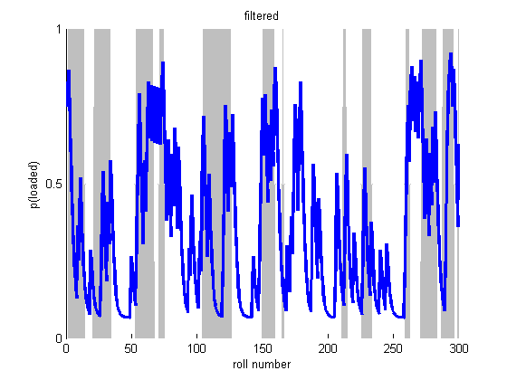
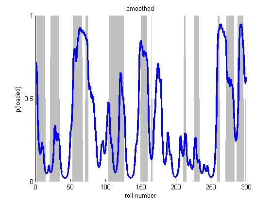
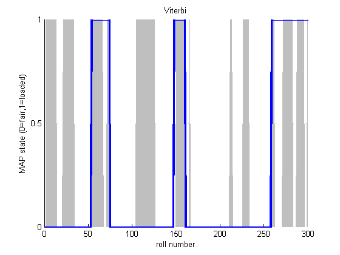

HMMs and the occasionally Dishonest Casino
This is an example from 'Biological Sequence Analysis: Probabilistic Models Proteins and Nucleic Acids' by Durbin, Eddy, Krogh, & Mitchison, (1998) p54.
Contents
Suppose a casino uses a fair die most of the time but occasionally switches to and from a loaded die according to Markovian dynamics. We observe the dice rolls but not the type of die. We can use a Hidden Markov Model to predict which die is being used at any given point in a sequence of rolls. In this example, we know both the transition and emission probabilities.
Specifying the Model
Since we are not learning the parameters, we must specify the observation/emission model, the transition matrix, and the distribution over starting states.
fair = 1; loaded = 2;
Observation Model
We will use a discrete observation model, one discrete distribution per hidden state of which there are two. We store these state conditional densities in a cell array.
setSeed(0);
obsModel = {[1/6 , 1/6 , 1/6 , 1/6 , 1/6 , 1/6 ]';... % fair die
[1/10, 1/10, 1/10, 1/10, 1/10, 5/10 ]'}; % loaded die
Transition Matrix
transmat = [0.95 , 0.05;
0.10 , 0.90];
Distribution over Starting States
pi = [0.5, 0.5];
Sample
We now sample a single sequence of 300 dice rolls
len = 300; nsamples = 1; hidden = mc_sample(pi, transmat, len, nsamples); observed = zeros(1, len); for t=1:len observed(1, t) = sampleDiscrete(obsModel{hidden(t)}); end
Viterbi Path
We can now try and recover the most likely sequence of hidden states, the Viterbi path.
nstates = numel(obsModel); localEvidence = zeros(nstates, len); for i=1:nstates localEvidence(i,:) = colvec(obsModel{i}(observed)); end viterbiPath = hmmViterbi(log(pi), log(transmat), log(localEvidence));
Sequence of Most Likely States (Max Marginals)
[gamma, alpha, beta, loglik] = hmmFwdBack(pi, transmat, localEvidence); maxmargF = maxidx(alpha); % filtered (forwards pass only) maxmarg = maxidx(gamma); % smoothed (forwards backwards)
Posterior Samples
We can also sample from the posterior, fowards filtering, backwards sampling, and compare the mode of these samples to the predictions above.
postSamp = mode(hmmSamplePost(pi, transmat, localEvidence, 100), 2)';
We now display the rolls, the corresponding die used and the Viterbi prediction.
die = hidden;
rolls = observed;
dielabel = repmat('F',size(die));
dielabel(die == 2) = 'L';
vitlabel = repmat('F',size(viterbiPath));
vitlabel(viterbiPath == 2) = 'L';
maxmarglabel = repmat('F',size(maxmarg));
maxmarglabel(maxmarg == 2) = 'L';
postsamplabel = repmat('F',size(postSamp));
postsamplabel(postSamp == 2) = 'L';
rollLabel = num2str(rolls);
rollLabel(rollLabel == ' ') = [];
for i=1:60:300
fprintf('Rolls:\t %s\n',rollLabel(i:i+59));
fprintf('Die:\t %s\n',dielabel(i:i+59));
fprintf('Viterbi: %s\n',vitlabel(i:i+59));
fprintf('MaxMarg: %s\n',maxmarglabel(i:i+59));
fprintf('PostSamp: %s\n\n',postsamplabel(i:i+59));
end
Rolls: 664153216162115234653214356634261655234232315142464156663246 Die: LLLLLLLLLLLLLLFFFFFFLLLLLLLLLLLLLLFFFFFFFFFFFFFFFFFFLLLLLLLL Viterbi: FFFFFFFFFFFFFFFFFFFFFFFFFFFFFFFFFFFFFFFFFFFFFFFFFFFFFLLLLLLL MaxMarg: LLFFFFFFFFFFFFFFFFFFFFFFFFFFFFFFFFFFFFFFFFFFFFFFFFFFFLLLLLLL PostSamp: LLFFFFFFFFFFFFFFFFFFFFFFFFFFFFFFFFFFFFFFFFFFFFFFFFFFFLLLLLLL Rolls: 266565636564663156346364565143132616331236166543611513332126 Die: LLLLLLLFFFLLLLLFFFFFFFFFFFFFFFFFFFFFFFFFFFFLLLLLLLLLLLLLLLLL Viterbi: LLLLLLLLLLLLLLFFFFFFFFFFFFFFFFFFFFFFFFFFFFFFFFFFFFFFFFFFFFFF MaxMarg: LLLLLLLLLLLLLLLLLLLFLFFFFFFFFFFFFFFFFFFFFFFFFFFFFFFFFFFFFFFL PostSamp: LLLLLLLLLLLLLLLLLLFFFFFFFFFFFFFFFFFFFFFFFFFLFFFFFFFFFFFFFFFL Rolls: 665265615224244342533561235666363263616623353232624646655663 Die: LLLLLLFFFFFFFFFFFFFFFFFFFFFFFLLLLLLLLLLFFFFFLLFFFFFFFFFFFFFF Viterbi: FFFFFFFFFFFFFFFFFFFFFFFFFFFLLLLLLLLLLLLLFFFFFFFFFFFFFFFFFFFF MaxMarg: LLLLLFFFFFFFFFFFFFFFFFFFFFFLLLLLLLLLLLLLFFFFFFFFFFFLLLLLLLLF PostSamp: LLLFFFFFFFFFFFFFFFFFFFFFFFFLLLLLLLLLLLLLFFFFFFFFFFFFLLLLLLLF Rolls: 121314366424634233242345366123246645235642151466151462214556 Die: FFFFFFFFFFFFFFFFFFFFFFFFFFFFFFLLLLFFFFFFFFFFFLLLLLLLLFFFFFFF Viterbi: FFFFFFFFFFFFFFFFFFFFFFFFFFFFFFFFFFFFFFFFFFFFFFFFFFFFFFFFFFFF MaxMarg: FFFFFFFFFFFFFFFFFFFFFFFFFFFFFFFFFFFFFFFFFFFFFFFFFFFFFFFFFFFF PostSamp: FFFFFFFFFFFFFFFFFFFFFFFFFFFFFFFFFFFFFFFFFFFFFFFFFFFFFFFFFFFF Rolls: 144461554351345123666266464656612464265626515211166666463346 Die: FFFFFFFFFFFFFFFFFFLLLLFFFFFFFFLLLLLLLLLLLLLFFFLLLLLLLLLLFFLL Viterbi: FFFFFFFFFFFFFFFFFFLLLLLLLLLLLLLLLLLLLLLLLLLLLLLLLLLLLLLLLLLL MaxMarg: FFFFFFFFFFFFFFFFFFLLLLLLLLLLLLLLLLLLLLLLLFFFFFFFLLLLLLLLLLLL PostSamp: FFFFFFFFFFFFFFFFFFLLLLLLLLLLLLLLLLLLLLLLLFFFFFFFFLLLLLLLLLLL
viterbiErr = sum(viterbiPath ~= die); maxMargSErr = sum(maxmarg ~= die); maxMargFErr = sum(maxmargF~=die); postSampErr = sum(postSamp ~= die); fprintf('\nNumber of Errors\n'); fprintf('Viterbi:\t\t\t\t%d/%d\n',viterbiErr,300); fprintf('Max Marginal Smoothed: %d/%d\n',maxMargSErr,300); fprintf('Max Marginal Filtered: %d/%d\n',maxMargFErr,300); fprintf('Mode Posterior Samples: %d/%d\n',postSampErr,300);
Number of Errors Viterbi: 86/300 Max Marginal Smoothed: 91/300 Max Marginal Filtered: 98/300 Mode Posterior Samples: 90/300
Here we plot the probabilities and shade in grey the portions of the die sequence where a loaded die was actually used.
figure; hold on; % fair=1, loaded=2. So die-1=0 for fair, so gray=loaded area(die-1,'FaceColor',0.75*ones(1,3),'EdgeColor',ones(1,3)); plot(alpha(loaded,:),'LineWidth',2.5); xlabel('roll number'); ylabel('p(loaded)'); set(gca,'YTick',0:0.5:1); title(sprintf('filtered')); printPmtkFigure hmmCasinoFiltered figure; hold on; area(die-1,'FaceColor',0.75*ones(1,3),'EdgeColor',ones(1,3)); plot(gamma(loaded,:),'LineWidth',2.5); xlabel('roll number'); ylabel('p(loaded)'); set(gca,'YTick',0:0.5:1); title(sprintf('smoothed')); printPmtkFigure 'hmmCasinoSmoothed' figure; hold on; area(die-1,'FaceColor',0.75*ones(1,3),'EdgeColor',ones(1,3)); plot(viterbiPath-1, 'linewidth', 2.5); xlabel('roll number'); ylabel('MAP state (0=fair,1=loaded)'); set(gca,'YTick',0:0.5:1); title(sprintf('Viterbi')); printPmtkFigure hmmCasinoViterbi  